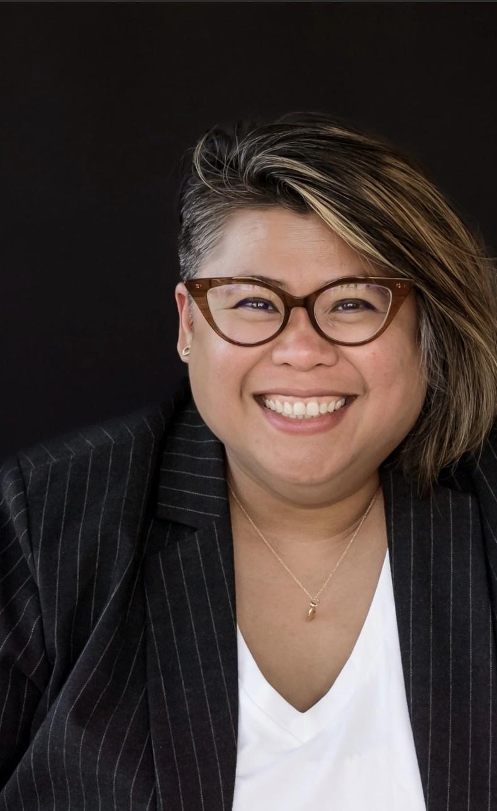

CoLab Spark is a Bay Area-based advisory practice founded by Pilar Lorenzana, a housing, community development, and philanthropic strategy leader with more than 20 years of experience working across the San Francisco Bay Area.
Pilar has spent her career building coalitions across the public, nonprofit, and private sectors — at Silicon Valley Community Foundation, where she led a team that deployed $30M+ to 200+ regional nonprofit partners; at SV@Home, where she directed policy, advocacy, and coalition strategy across Santa Clara County and designed one of the first cross-sector land-use coalitions to bring affordable housing advocates, developers, and a major tech company to the same table; and at Google, where she authored the company's first Social Infrastructure Plan and led local community engagement and development efforts.
She holds a Master's in Environmental Planning from Arizona State University and a Bachelor's in Architecture from the University of Santo Tomas, Philippines.
CoLab Spark brings that network, credibility, and regional fluency directly to every engagement.
Get in touch